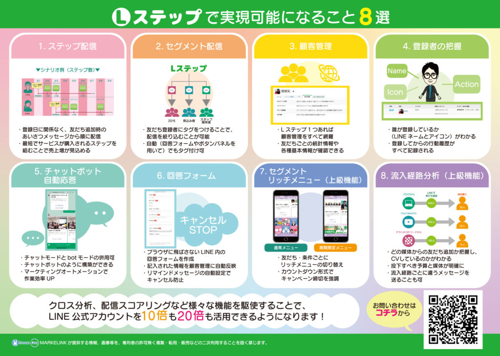
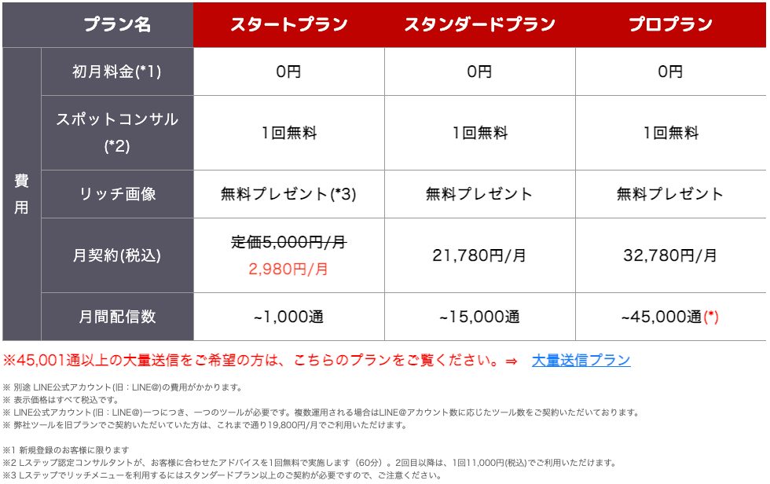
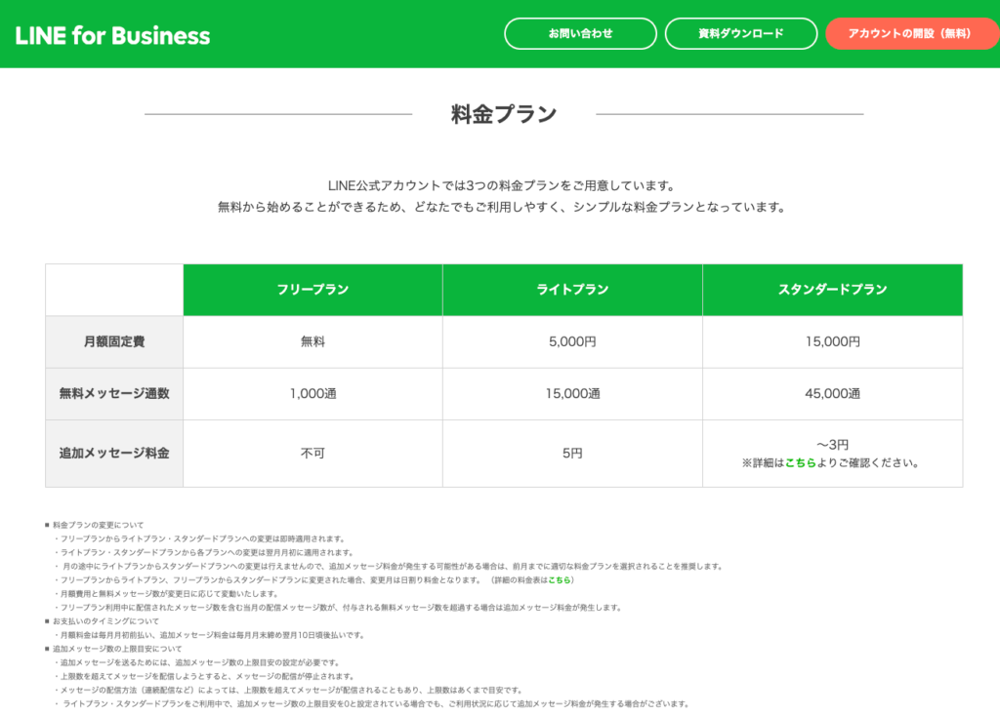
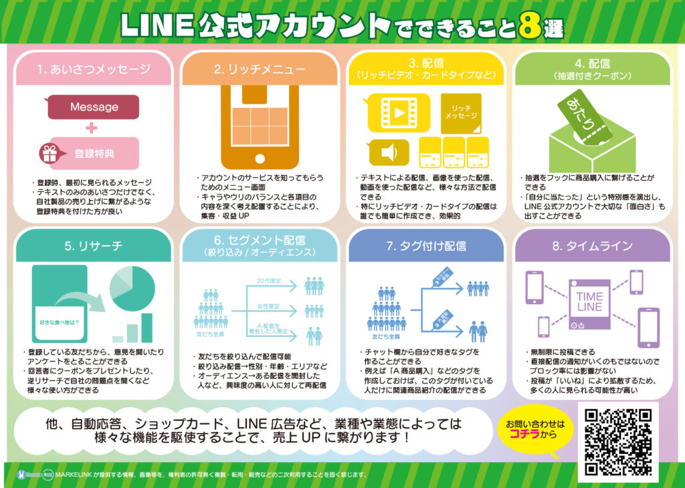
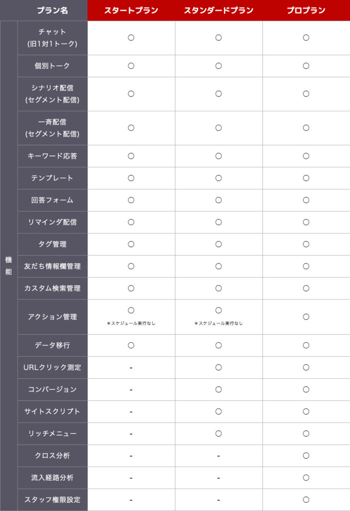

#020 Lステップを導入！費用は？ 効果は？

こんにちは！matsumotoです。
今日は、もしLステップを導入するとしたら、どのプランを選べばいい？ 効果を得るためには、どのくらいの費用をかけるべき？と迷っておられる皆さまに向けて！ コンサルタントのmatsumotoが解説しますね。
ちょっと混み入った内容になりますが、LINE公式アカウントを戦略的に運用するために大変重要なポイントですので、じっくり読んでいただければと思います。
（１）有料のLステップ、最初から必要？
すでにある程度の顧客を持つ企業や、これから大きなお店を開店するにあたりLINE公式アカウントの活用を検討されている場合、最初から有料の運営ツール（matsumotoのおすすめは、コスパの良いLステップ一択！）を活用する前提でお考えの方も多いと思います。
まず「公式アカウントに最初から有料の運営ツールが必要なの？」というお話ですが、結論から言いますと『Lステップの機能でひとつでも使いたい機能があるなら、最初から導入すべきです！』。
それでは最初に「（matsumotoおすすめの）Lステップにはどんな機能が備わっているのか」というところから見ていきましょう。
（２）Lステップで出来ること

まずは、自動配信機能や自動応答（チャットボット）、回答フォームなど、気軽に便利に使えそうな機能に目が行きますね。
そして、顧客（友だち）についてかなり詳しく分析したり、友だちのデータを活用したターゲティング戦略（セグメント配信・顧客管理・登録者の把握・セグメントリッチメニュー ・流入経路分析など）を実施することも可能です。
では、これらの機能を使うためにはどのくらいお金がかかるのでしょうか？
（３）Lステップの価格設定

現在、Lステップには３段階のプランがあります。注目すべきは「スタートプラン」と「スタンダードプラン」の価格差です！2,980円（スタートプラン）からいきなり21,780円／月（スタンダードプラン）では、かなり悩みますよね？ちなみに、Lステップを導入するとき、途中でプランをアップグレードすることは可能ですが、ダウングレードすることは出来ないので、注意が必要です。
一番お手軽な「スタートプラン」は、3,000円弱で導入可能です。ただ、月間配信数が1,000通以内であることをご確認ください。これ、実はLINE公式アカウント自体が「有料化する」目安でもあるんです。
（４）LINE公式アカウントの費用

ここで基本に立ち返って考えてみましょう。LINE公式アカウントは、最初は無料で利用できます。ただ、月に配信するメッセージ数が1,000通を超えると、有料化されます。
まだ公式アカウントを利用する前から「1,000配信／月」と言われても、ピンとこないかもしれません。ここで、具体的に試算してみましょう。
（５）どの程度で月1,000通以上配信することになるの？

あらためて、LINE公式アカウント（有料ツール導入未）で出来ることもおさらいしておきましょう！
LINE公式アカウントに友だち登録してもらったら、まず「あいさつメッセージ」を配信します。そこから、自己紹介や自社サイトに誘導するメッセージ、プレゼントやくじ引き・クーポンの提供など、最低でも初月３〜４回は配信します。
もし友だちが20人いて、上記のようなメッセージ配信を行うと、、、
メッセージ数（4本／月）×友達数（20）＝80本
…ということになります。
その後も、継続して月に最低４本程度は配信した方が良いです。それが1,000通に達するためには、1,000÷4＝250人の友達が必要、ということになります。
ここで、友だち登録してもらっても全ての友だちにメッセージ配信される訳ではない、という点も注意が必要です。
TR（ターゲットリーチ）数と呼ばれるのですが、LINE公式アカウントに友だち登録してもらっても、ブロックされてしまうと配信できないので、そこを差し引いて計算します。ブロックされた友だち数については、PC版LINE Official Account Managerの「友だち」設定で確認できます。
実店舗でレジ横に「友だち登録で5%OFF！」というようなPOPを置いているお店をよく見かけますが、会計の時に友だち登録してもらっても、その後即ブロックされては意味がありません。
友だちが少ないうちは、まず友だち登録してもらえる工夫と、友だち登録していることにメリットを感じてもらえるよう、配信内容を充実させることが大切！ここがいちばん大切なポイントです！！
（６）友だち数250人未満なら…
という訳で、友だち数が250人未満のアカウントに有料の配信ツールを導入する必要があるのか、と聞かれれば少し疑問があるといえます。ただ、開業したばかりの会社や開店したばかりのお店の経営者など、LINE公式アカウントにあまり手間や時間をかけられない場合は、自動配信ツールを活用すれば手間が省けて良いです。この場合は、月3,000円弱で利用できるスタートプランで十分でしょう。
大切なことは、こういった内訳を試算もせずにいきなりLステップ「スタンダードプラン」を導入しても、友だち数によっては機能を使いきれない場合もあるということです。
他にも、LINE公式アカウント（有料ツール導入未）であれば、友だちからの問い合わせ等で送る「個別メッセージ」は「配信数」にカウントされません。が、一旦Lステップを導入すると、「Lメッセージ」として「配信数」にカウントされるようになります。それらを考慮すると、試算内容もだいぶ変わってくるのです。
（７）広告宣伝費を大幅に縮小できるのがLINE公式アカウント
そもそも、LINE公式アカウントはチラシやWEBサイト、ポイントカードやその他様々な宣伝ツールを（最初は）無料で利用できるというツールです。
昔はそれらの印刷費や配布など、手間もお金もかかりましたが、今はスマホでキャッシュレス決済をしたりポイントを貯めたりする時代です！
さらにLステップを導入すれば、膨大な数の顧客に対して広告宣伝や販促戦略を実施することができます。

最初は友だち登録してもらうこと自体が大変だったりします…。しかし、上の表のような機能をすべて使い切っても、費用は最大3万円強（大容量プランは別途価格設定があります）と、大変費用対効果のよいツールです！
今回は主に 機能・費用・メッセージ数について、具体的に解説しました。
次回は、Lステップを途中から導入した場合におこる『知らないとヤバいシステム上の落とし穴』について説明します。
何事も最初が肝心！まずは、先ほども書いたとおり、友だち登録してもらうための仕掛けと、友だちでい続けてもらう配信サービスの充実をはかりましょう！
困ったときは、コンサルタントのmatsumotoまでぜひご相談ください。（友だち登録してもらうと、初回60分無料相談特典で相談できます）
まずはLINE公式アカウントを開設しましょう！
●LINE公式アカウントの開設方法はこちら
●LINE公式アカウントをオススメする理由はこち
●LINE公式アカウントでできることはこちら
●Lステップでできることはこちら